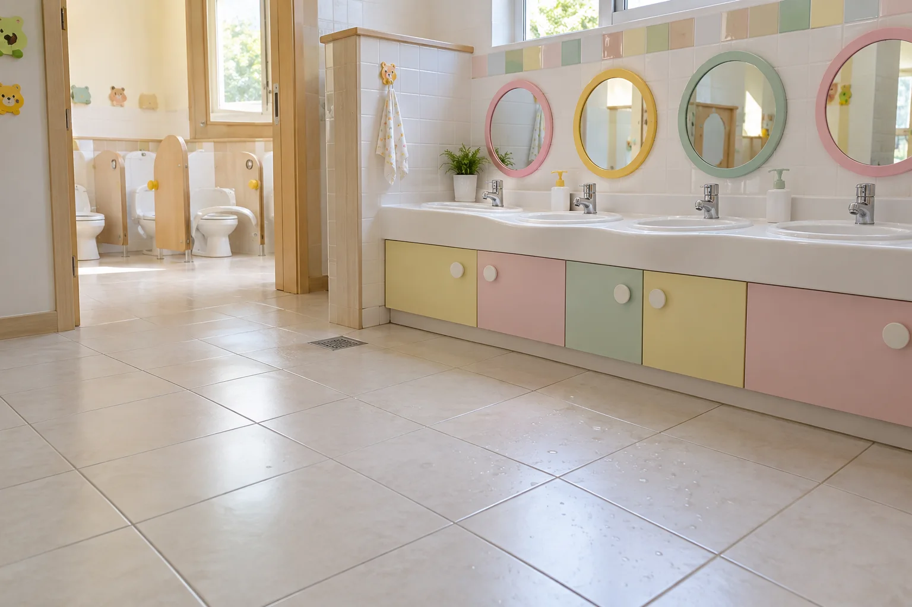
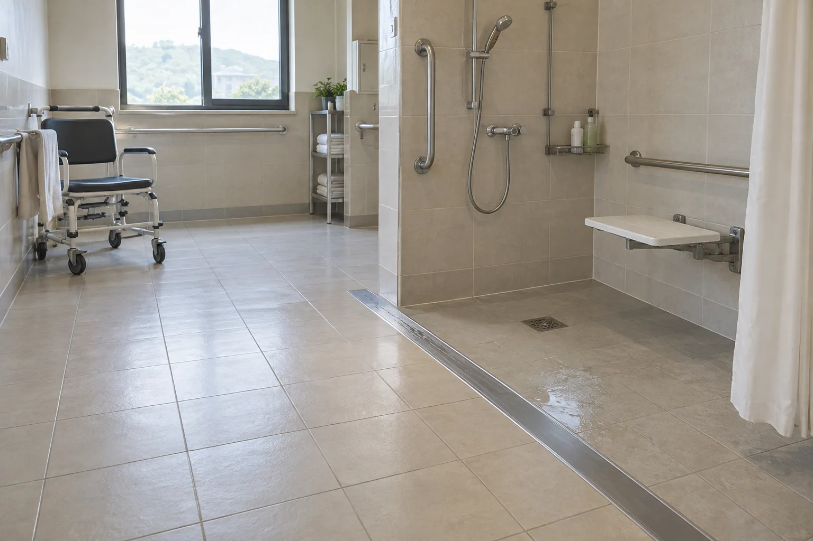

적용공간
식당·수영장부터
유치원·요양원·욕실까지
물기가 생기는 타일·석재 바닥에 미끄럼방지 시공을 제공합니다.
시설 전체부터 화장실 한 곳까지, 필요한 구역에 맞춰 시공합니다.
전국 무료 방문 실측·샘플 시공직접 운영 시공팀 · 시공 후 12개월 무상 A/S
식당·주방
조리·세척·배식 동선
미끄럼방지 시공
설거지와 바닥 청소로 물기가 생기는 주방. 직원은 뜨거운 음식과 무거운 식기를 들고 이동합니다. 조리대 앞에서 배식 통로까지 젖는 구역의 바닥을 처리합니다.
- 우선 시공 구역 조리대 앞, 세척대 주변, 주방 출입구, 배식 통로
- 영업 일정 조율 마감 후·휴무일 작업, 가능한 현장은 구역별 시공
- 시공 후 관리 기름·음식물·세제 잔여물 제거와 미끄럼 상태 점검

호텔·수영장·목욕시설
수영장·샤워실의
젖은 통로 미끄럼방지
물 밖으로 나온 고객이 맨발로 걷는 통로, 샤워 후 이동하는 바닥, 물기가 남는 객실 욕실. 이용 방식에 맞춰 젖은 바닥의 미끄럼 저항을 개선합니다.
- 우선 시공 구역 풀 주변, 샤워실, 탈의실 연결 통로, 객실 욕실
- 맨발 이용 구역 해당 바닥의 샘플에서 효과와 표면 촉감을 함께 확인
- 시설 운영 조율 이용 시간과 청소·배수 여건을 확인해 작업 시간 결정

관공서·기업·상업시설
출입구·로비·공용 화장실
미끄럼방지 시공
우산과 신발에서 떨어진 빗물, 청소 직후의 물기, 여러 사람이 오가는 공용 화장실. 직원과 방문객이 반복해서 지나는 바닥의 위험 구역을 현장에서 확인합니다.
- 우선 시공 구역 출입구, 로비 통로, 공용 화장실, 실내 연결 동선
- 외관 사전 확인 기존 석재·타일의 색과 광택을 작은 샘플에서 비교
- 기관 검토 자료 계측 자료가 필요한 경우 별도 출장 측정과 비용 협의

유치원·어린이집·학교
아이들이 이용하는
세면대·화장실 바닥 시공
손을 씻고 나오는 세면대 앞, 물이 튀는 화장실, 급식실의 배식 동선. 아이들이 이용하는 타일 구역을 확인하고 시설 일정에 맞춰 시공합니다.
- 우선 시공 구역 세면대 앞, 화장실 출입구, 급식실 배식·세척 구역
- 이용자와 작업 분리 수업·등하원 시간을 피하고 작업 구역 출입 통제
- 시공 후 이용 세척·회수와 마무리 확인 후 이용 재개 시점 안내

요양원·복지시설·병원
어르신의 이동·목욕 구역
미끄럼방지 시공
보행 보조기를 사용하는 통로, 목욕을 돕는 샤워 구역, 자주 오가는 화장실. 이용자의 이동 방식과 직원의 돌봄 동선을 함께 살펴 시공 범위를 정합니다.
- 우선 시공 구역 공동 욕실, 화장실, 젖는 출입구, 타일 이동 통로
- 시설 일정 조율 목욕·식사·돌봄 시간에 맞춰 작업 구역과 동선 분리
- 낙상 위험 관리 바닥 관리와 함께 물기 제거·배수·보행 보조 상태 점검
한국소비자원 2024년 고령자 안전사고 집계에서 낙상사고는 78.8%.사고 유형 분포와 출처 확인

가정 욕실
욕실 한 곳도
철거 없이 미끄럼방지
샤워 후 바닥에 물이 남거나 비누·세제 잔여물로 미끄러운 욕실. 가정의 작은 욕실도 방문해 기존 타일에 시공 가능한지 먼저 확인합니다.
- 우선 시공 구역 샤워 공간, 욕조 앞, 세면대 주변, 욕실 출입구
- 철거 없는 시공 적합한 기존 타일의 표면을 처리해 미끄럼 저항 개선
- 무료 샘플 확인 실제 욕실 바닥에서 효과·색상·광택 확인 후 결정

전국 무료 방문·샘플 시공
현장에서 재질·미끄러운 구역·필요한 면적을 확인합니다.
샘플 결과를 본 뒤 시공 범위와 견적을 안내합니다.
이미지는 적용 공간과 작업 방법을 설명하기 위한 브랜드 이미지입니다.